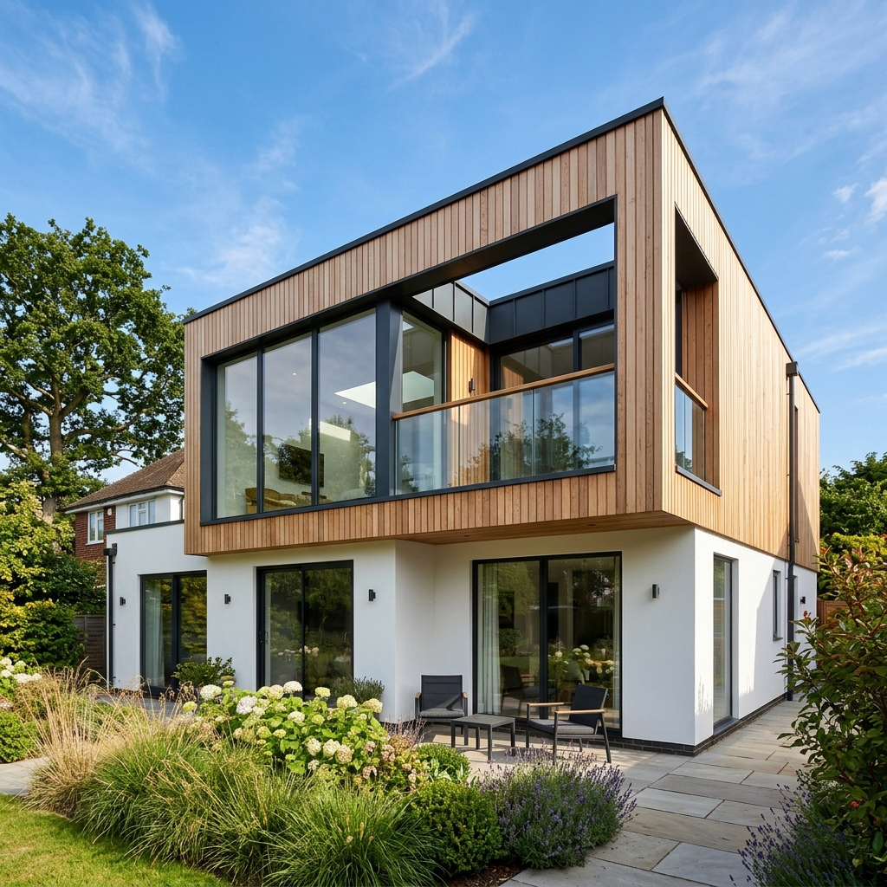

Gestionamos tu expediente ante la Dirección de Obras Municipales (DOM) de El Bosque. Regularizamos ampliaciones, segundos pisos, mansardas y viviendas completas bajo la Ley del Mono 20.898 (vigente hasta diciembre de 2027) para destrabar ventas bancarias, herencias y créditos hipotecarios.

Gestión técnica y administrativa integral sin filas ni trámites engorrosos para ti.
Visitamos tu vivienda en El Bosque (Gran Avenida, Lo Blanco, Padre Hurtado, Los Morros, etc.) para medir con precisión milimétrica.
Elaboración de planos arquitectónicos oficiales (plantas, cortes, elevaciones) y Especificaciones Técnicas (E.E.T.T.) según la OGUC.
Ingresamos formalmente la carpeta ante la Dirección de Obras de El Bosque y gestionamos el levantamiento de observaciones.
Obtención del Certificado de Regularización municipal timbrado, dejando la propiedad 100% bancarizable y lista para venta o tasación.
La ley simplificada de regularización está vigente hasta el 31 de diciembre de 2027.
Para inmuebles de autoconstrucción con avalúo fiscal hasta 1.000 UF. Exención o rebaja sustancial de derechos municipales ante la DOM.
Para propiedades con avalúo fiscal hasta 2.000 UF. Requiere planimetría y certificación de habitabilidad suscrita por arquitecto colegiado.
¿Problemas de herencia, posesión efectiva o cesión de derechos en El Bosque? Nuestro equipo jurídico aliado Arismendi & Vera sanea el título para su ingreso municipal.
Sí. En Estudio ROER verificamos la estabilidad de la estructura soportante y exigimos la instalación de muros cortafuego con resistencia F-60 en los deslindes con vecinos, requisito indispensable exigido por la DOM El Bosque.
Al asumir el patrocinio técnico de tu vivienda, emitimos un Certificado de Expediente en Trámite formal para presentar ante el juez o inspector municipal, demostrando voluntad de cumplimiento y suspendiendo sanciones o decretos de demolición.
Escríbenos directamente o agenda tu visita técnica en terreno. Un arquitecto colegiado evaluará tu inmueble y entregará un presupuesto 100% cerrado y transparente.